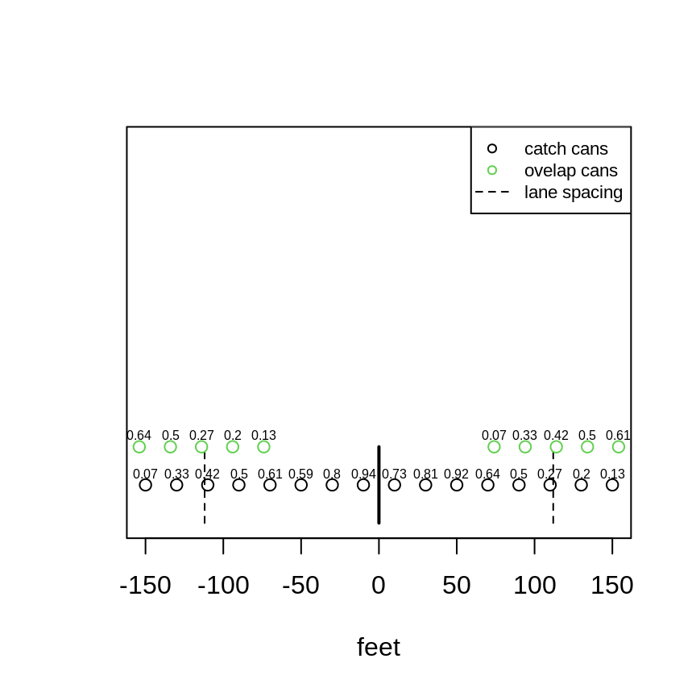
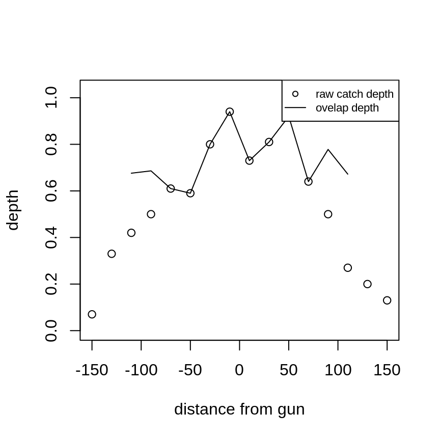

Description
Traveling systems use a single large sprinkler (typically called a “gun-type” sprinkler) attached to a cart that is pulled either by a cable or by the supply hose along a straight line for a distance as far as the length of the supply hose. Cable systems pull the cart by winding in the cable attached to the gun cart, while hose-pull systems use the hose to pull the cart and gun towards the reel from which the hose is wound. Hose-type systems are far more common than cable-tow systems. To achieve overlap and thus acceptable uniformity, “travel lanes” are established such that adjacent pulls result in application overlap. Evaluation of uniformity for such systems differs from linear-move or solid-set systems in that a single row (transect) of catch containers are used rather than a grid. The catch can transect is aligned perpendicular to the gun travel direction. During an evaluation test, the sprinkler is moved through the catch can transect beginning with the sprinkler gun positioned beyond the transect, so that it throws short of the catch can transect, until it no longer contributes to the catch cans on the other side of the transect. Overlap for the test is then achieved by superimposing the catch data according to the adjacent travel lane distances (adjacent pulls).
Example
Data for this example are taken from the catchcan dataset. The raw data and stationing, and a plot of the raw data are given below:
| L1 | L2 | L3 | L4 | L5 | L6 | L7 | L8 | R1 | R2 | R3 | R4 | R5 | R6 | R7 | R8 | |
|---|---|---|---|---|---|---|---|---|---|---|---|---|---|---|---|---|
| station | -10.00 | -30.0 | -50.00 | -70.00 | -90.0 | -110.00 | -130.00 | -150.00 | 10.00 | 30.00 | 50.00 | 70.00 | 90.0 | 110.00 | 130.0 | 150.00 |
| depth | 0.94 | 0.8 | 0.59 | 0.61 | 0.5 | 0.42 | 0.33 | 0.07 | 0.73 | 0.81 | 0.92 | 0.64 | 0.5 | 0.27 | 0.2 | 0.13 |
plot(cc.data)Catch can collected depths with station
We now can use the travunif function to both overlap the data and return uniformity measures. This function in turn calls CU, DU, and DU.lh to return those measures of uniformity. Two plots, a plan view of the catch can data, and a plot of the overlapped depths will also be generated (unless plot=“F”).
lcdata<-cc.data[1:8,2] #left data is first 8 observations
rcdata<-cc.data[9:16,2]#right data is last 8 observations
out<-travunif(ls=224,cs=20,lcdata,rcdata)#omit site name, and allow plot
The uniformity measures for this example are:
| CU | DUlh | DU |
|---|---|---|
| 87.4 | 87.5 | 83.1 |
We can also determine PELQ using the catch can data and the applied depth of water. We’ll use the overlapped catch data returned from travunif
#overlapped depths are first in list returned from
#`travunif`
PELQT(out$o.depths,SI=FALSE,rate=197,ls=224,ts=1.75)[1] 76.08728
References
Evans, R.O., Barker J.C., Smith J.T., Sheffield R.E. 1997b. Field calibration procedures for animal wastewater application equipment, hard hose and cable tow traveler irrigation system. NC Cooperative Extension Service publication AG-553-2. Raleigh, NC (https://p2infohouse.org/ref/32/31084/ag-553-2.pdf)